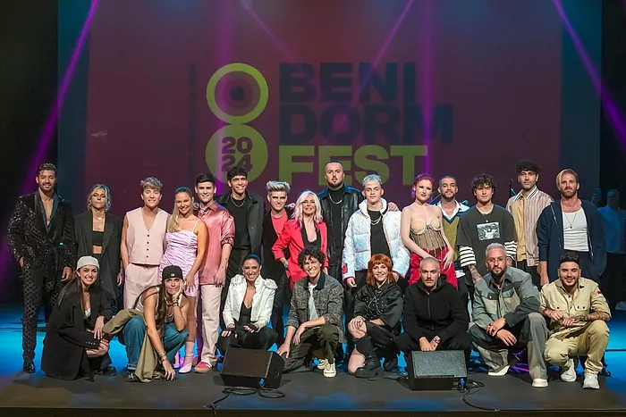

Las canciones con las que participarán en el certamen verán la luz en el próximo mes
Este pasado sábado se presentaron a los 16 elegidos que participarán en el Benidorm Fest 2024, en un evento celebrado en Sevilla. La nueva edición, que se celebrará entre los días 30 de enero, 1 y 3 de febrero, contará con la presencia de 16 canciones inéditas y que están por ser descubiertas, pero el público ya puede hacerse una idea de los estilos musicales en los que estos artistas se mueven y cómo han sido sus trayectorias.
RTVE ha presentado este cartel con el que se dio a conocer la identidad de los artistas que pugnarán por representar a España en una nueva edición del festival más importante del panorama europeo, “Eurovisión”. La sexagésimo octava edición del certamen se celebrará en Suecia, concretamente en Malmö, tras la victoria del país en la edición de 2023 con la canción “Tattoo” de Loreen, quien logró 583 puntos.
Los candidatos a representar a España serán: Almacor, Angy Fernández, Dellacruz, Jorge González, Lérica, Mantra, Maria Peláe, Marlena, Miss Caffeina, Nebulossa, Noan, Quique Niza, Roger Padrós, St. Pedro, Sofía Coll y Yoly Saa. RTVE había prometido la edición más diversa del Benidorm Fest y la más representativa de la música española, y así ha sido.